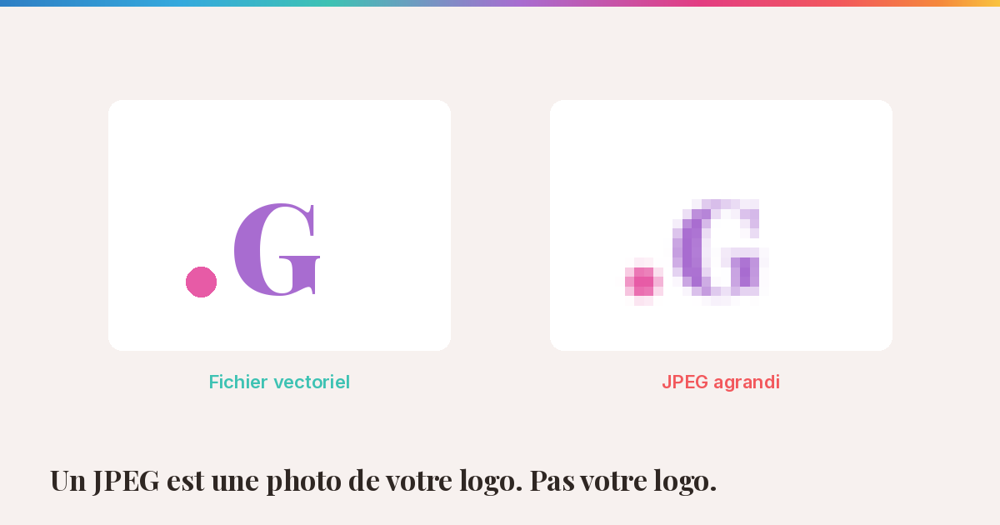
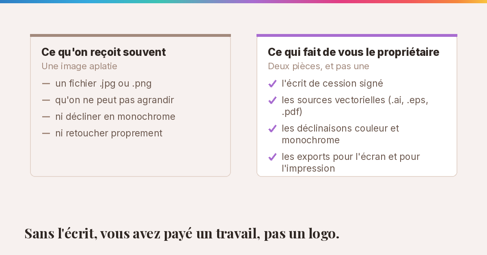
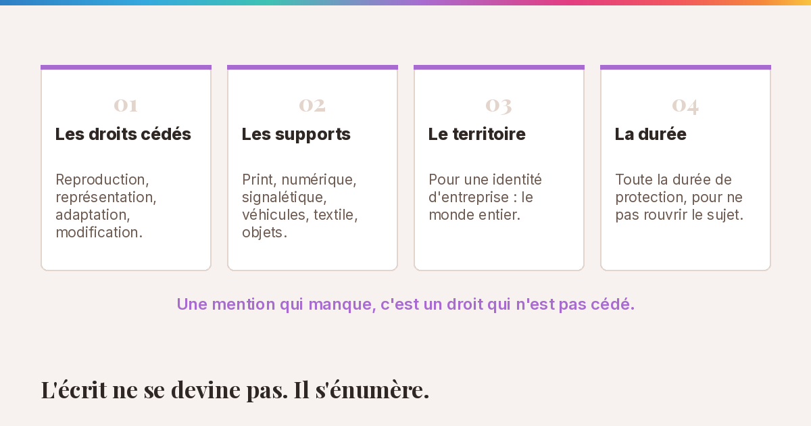

Qui possède votre logo ?

Un commerçant me contacte. Il veut décliner son logo sur un véhicule et une enseigne. Le logo a été créé il y a quatre ans par quelqu'un qui n'exerce plus. Il a la facture, il a un fichier JPEG, et c'est tout.
Techniquement, on est bloqués. Juridiquement aussi.
Payer n'est pas acquérir
C'est le point que personne n'explique au moment du devis : en droit français, la facture ne transfère pas les droits. Un logo est une œuvre de l'esprit ; son auteur en détient les droits dès la création, et ces droits ne changent de main que par un écrit qui le prévoit.
Le texte est l'article L. 131-3 du code de la propriété intellectuelle. Il dit ceci :
La transmission des droits de l'auteur est subordonnée à la condition que chacun des droits cédés fasse l'objet d'une mention distincte dans l'acte de cession et que le domaine d'exploitation des droits cédés soit délimité quant à son étendue et à sa destination, quant au lieu et quant à la durée.
Traduit en français courant : une cession valable doit énumérer quels droits sont cédés, pour quoi faire, où et pendant combien de temps. Une ligne « création de logo » sur une facture ne remplit aucune de ces quatre conditions.
Et une clause qui céderait « tous les droits sur toutes les créations à venir » ne sauve rien : l'article L. 131-1 du même code énonce que la cession globale des œuvres futures est nulle.
Ce que ça donne en pratique
Les conséquences arrivent toujours plus tard, et toujours au mauvais moment :
- vous voulez décliner le logo sur un support auquel personne n'avait pensé — flocage, enseigne lumineuse, habillage de véhicule ;
- vous voulez le modifier, le moderniser, l'adapter à un format carré pour les réseaux ;
- vous voulez le déposer comme marque à l'INPI ;
- vous changez de prestataire et le nouveau demande les fichiers sources ;
- vous vendez le fonds de commerce et l'acquéreur, lui, fait vérifier le dossier par son conseil.
Dans chacun de ces cas, la question « qui détient les droits ? » se pose, et l'absence d'écrit se transforme en négociation — avec quelqu'un qu'il faut d'abord retrouver.

Les deux pièces qui règlent le problème
Un dossier propre tient en deux choses.
Un écrit de cession, qui précise les droits cédés (reproduction, représentation, adaptation, modification), les supports visés — et là il faut être large : print, numérique, signalétique, véhicules, textile, objets —, le territoire, et la durée. Pour une identité d'entreprise, on cède pour toute la durée de protection et pour le monde entier : ça évite de rouvrir le sujet à chaque nouveau projet.
Les fichiers sources vectoriels. Un JPEG ou un PNG est une image aplatie : on ne peut pas l'agrandir sans qu'elle se dégrade, ni en extraire une version monochrome, ni changer une couleur proprement. Le fichier vectoriel, lui, se redimensionne à l'infini et se décline. Sans lui, vous détenez une photo de votre logo, pas votre logo.

Sans le fichier vectoriel, vous détenez une photo de votre logo, pas votre logo.
Un détail qui n'en est pas un : le droit moral
Même après une cession complète, l'auteur conserve son droit moral : le droit à la paternité de l'œuvre et au respect de son intégrité. Il est incessible, et ça ne se contourne pas.
En pratique, ça se gère très bien — c'est même rarement un sujet entre gens de bonne foi. Mais ça signifie qu'une refonte lourde confiée à un tiers mérite une conversation, pas un passage en force.
Comment je travaille
Pour chaque identité visuelle que je livre, les fichiers sources vectoriels sont remis.
Ce n'est pas un argument commercial, c'est le minimum. Un logo dont vous ne maîtrisez pas les droits n'est pas un actif de votre entreprise : c'est une dépendance.
Si vous avez un logo existant et aucun écrit, ne le jetez pas — la situation se rattrape souvent, et il vaut mieux s'en occuper avant d'avoir besoin du fichier en urgence. C'est souvent le moment où l'on se demande aussi s'il ne faudrait pas refaire son image. Parlons-en.
Un projet en préparation ?
Un premier échange est gratuit, et franc — y compris quand la réponse est que vous n'avez besoin de rien.